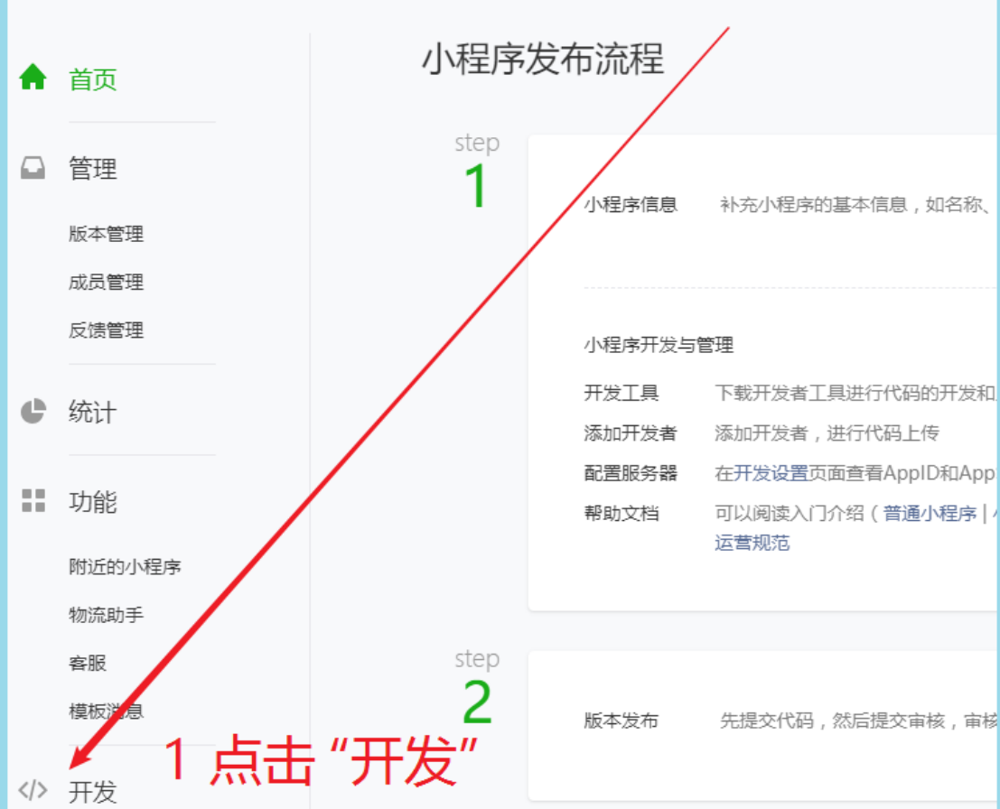
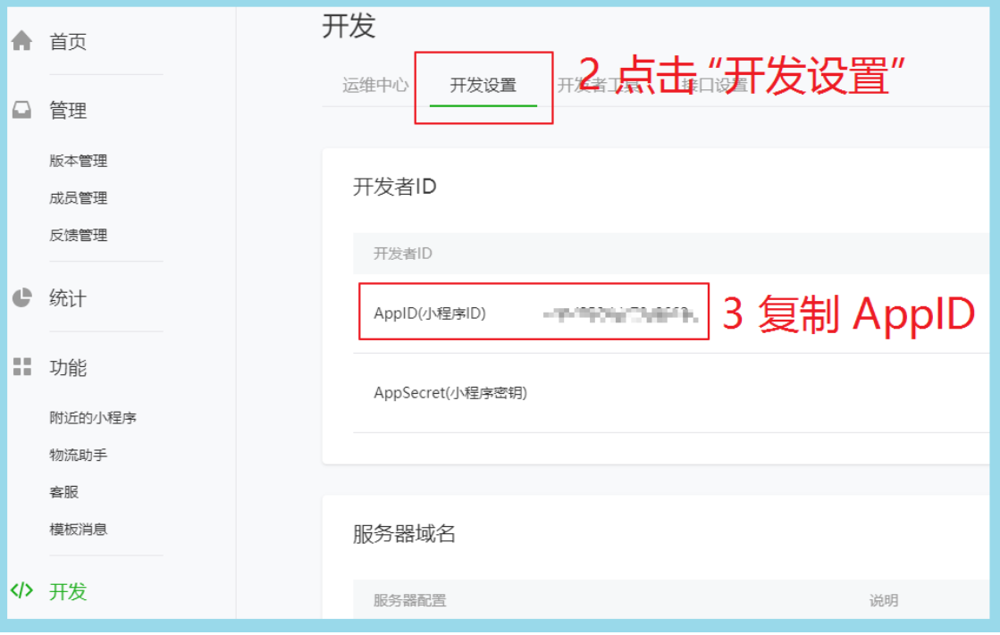
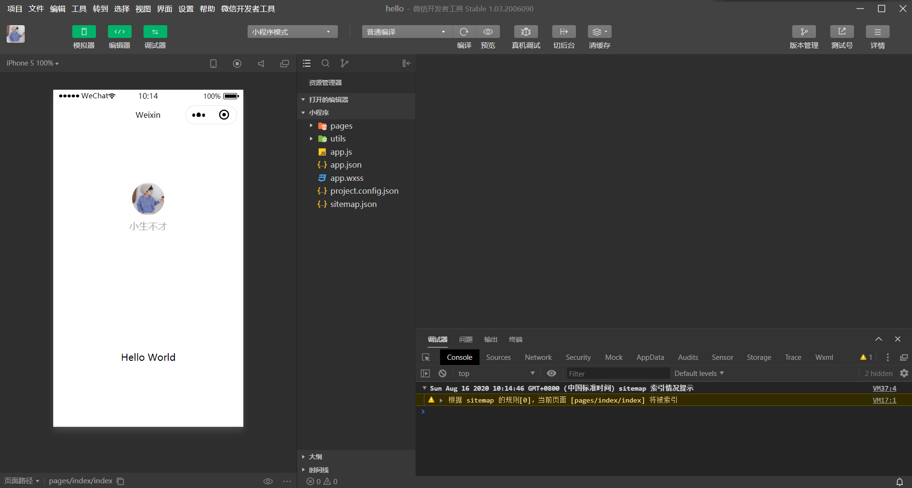
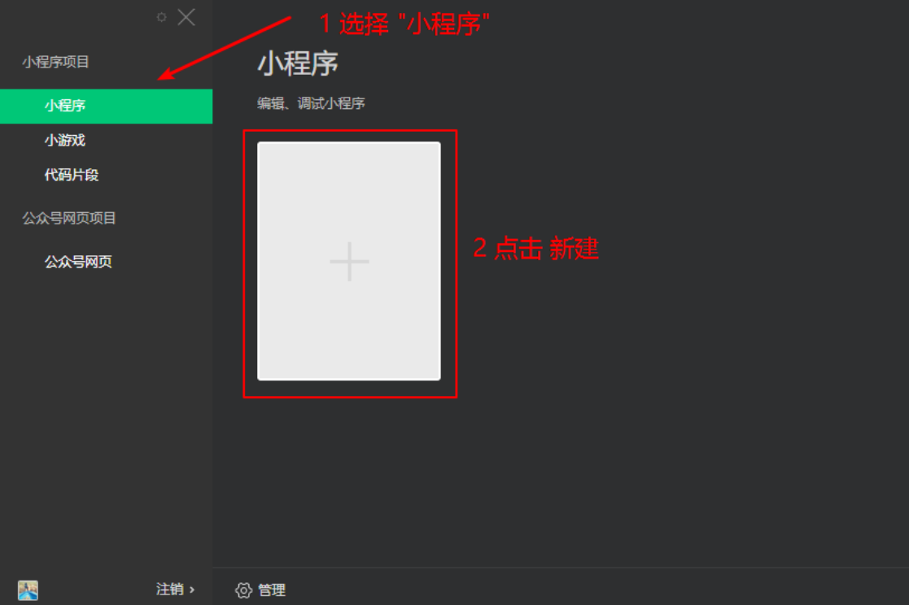
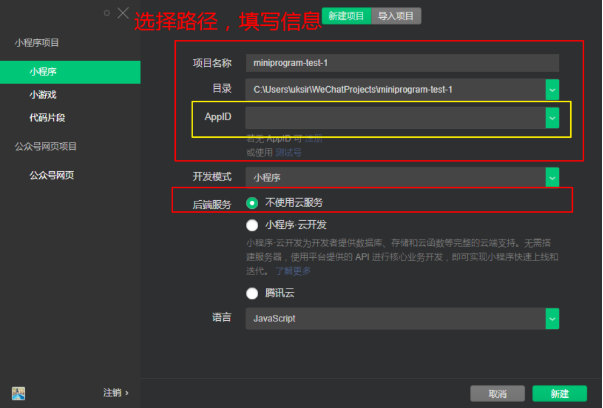
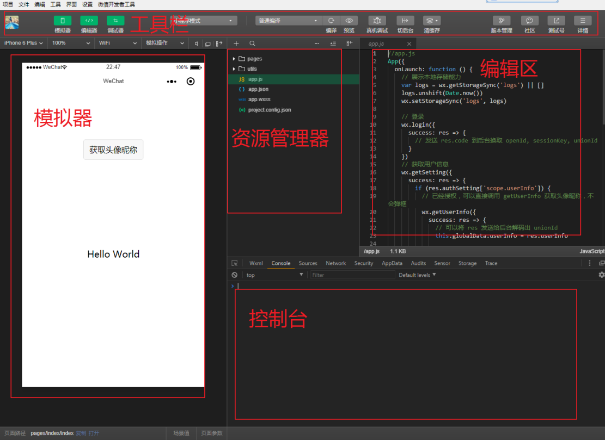
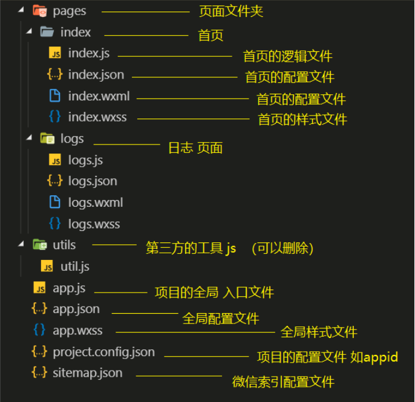
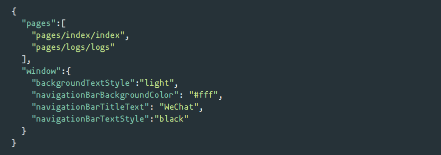
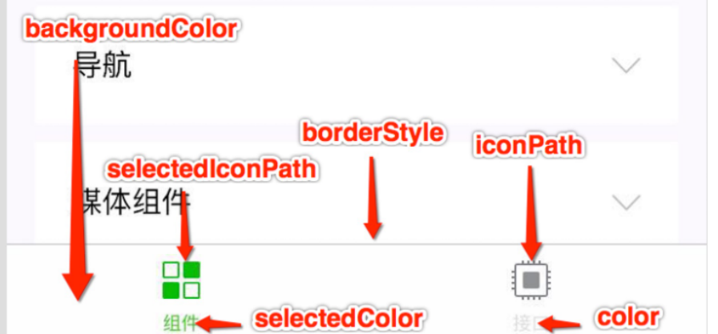
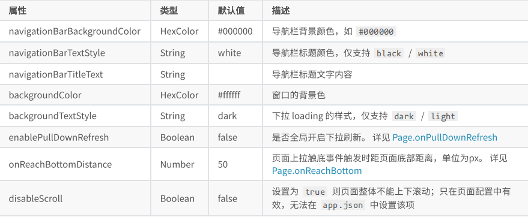

微信⼩程序介绍
微信⼩程序，简称⼩程序，英⽂名 Mini Program ，是⼀种不需要下载安装即可使⽤的应⽤，它实现 了应⽤“触⼿可及”的梦想，⽤⼾扫⼀扫或搜⼀下即可打开应⽤
环境准备
开发微信⼩程序之前，必须要准备好相应的环境
注册账号
建议使用全新的邮箱，没有注册过其他小程序或者公众号的。访问注册⻚⾯耐⼼完成注册即可。
获取APPID
由于后期调⽤微信⼩程序的接⼝等功能，需要索取开发者的⼩程序中的 APPID ，所以在注册成功后， 可登录，然后获取APPID。
登录，成功后可看到如下界⾯
然后复制你的APPID,悄悄的保存起来，不要给别⼈看到😄。


开发⼯具

微信⼩程序⾃带开发者⼯具，集 开发 预览 调试 发布 于⼀⾝的 完整环境。
但是由于编码的体验不算好，因此 建议使⽤ vs code + 微信小程序编辑工具 来实现编码
vs code 负责敲代码， 微信编辑工具负责预览
第⼀个微信⼩程序
打开微信开发者⼯具
注意 第⼀次登录的时候 需要扫码登录
新建⼩程序项⽬

填写项⽬信息

成功
微信开发者⼯具介绍
详细的使⽤，可以查看官⽹

⼩程序结构⽬录
⼩程序框架的⽬标是通过尽可能简单、⾼效的⽅式让开发者可以在微信中开发具有原⽣ APP 体验的服务。
⼩程序框架提供了⾃⼰的视图层描述语⾔ WXML 和 WXSS ，以及 JavaScript ，并在视图层与逻辑层间提供了数据传输和事件系统，让开发者能够专注于数据与逻辑。
⼩程序⽂件结构和传统web对⽐
| 结构 | 传统web | 微信小程序 |
|---|---|---|
| 结构 | HTML | WXML |
| 样式 | CSS | WXSS |
| 逻辑 | Javascript | Javascript |
| 配置 | 无 | JSON |
通过以上对⽐得出，传统web 是三层结构。⽽微信⼩程序 是四层结构，多了⼀层 配置.json
基本的项⽬⽬录

⼩程序配置⽂件
⼀个⼩程序应⽤程序会包括最基本的两种配置⽂件。⼀种是全局的 app.json 和 ⻚⾯⾃⼰的page.json
注意：配置文件中不能出现注释
全局配置 app.json
app.json 是当前⼩程序的全局配置，包括了⼩程序的所有⻚⾯路径、界⾯表现、⽹络超时时间、底 部 tab 等。普通快速启动项⽬⾥边的 app.json 配置

字段的含义
pages字段⸺⽤于描述当前⼩程序所有⻚⾯路径，这是为了让微信客⼾端知道当前你的⼩程序 ⻚⾯定义在哪个⽬录。window字段⸺定义⼩程序所有⻚⾯的顶部背景颜⾊，⽂字颜⾊定义等。- 完整的配置信息请参考 app.json配置
tabbar

⻚⾯配置 page.json
这⾥的 page.json 其实⽤来表⽰⻚⾯⽬录下的 page.json 这类和⼩程序⻚⾯相关的配置。 开发者可以独⽴定义每个⻚⾯的⼀些属性，如顶部颜⾊、是否允许下拉刷新等等。
⻚⾯的配置只能设置 app.json 中部分 window 配置项的内容，⻚⾯中配置项会覆盖 app.json的 window 中相同的配置项。

sitemap 配置-了解即可
⼩程序根⽬录下的 sitemap.json ⽂件⽤于配置⼩程序及其⻚⾯是否允许被微信索引。